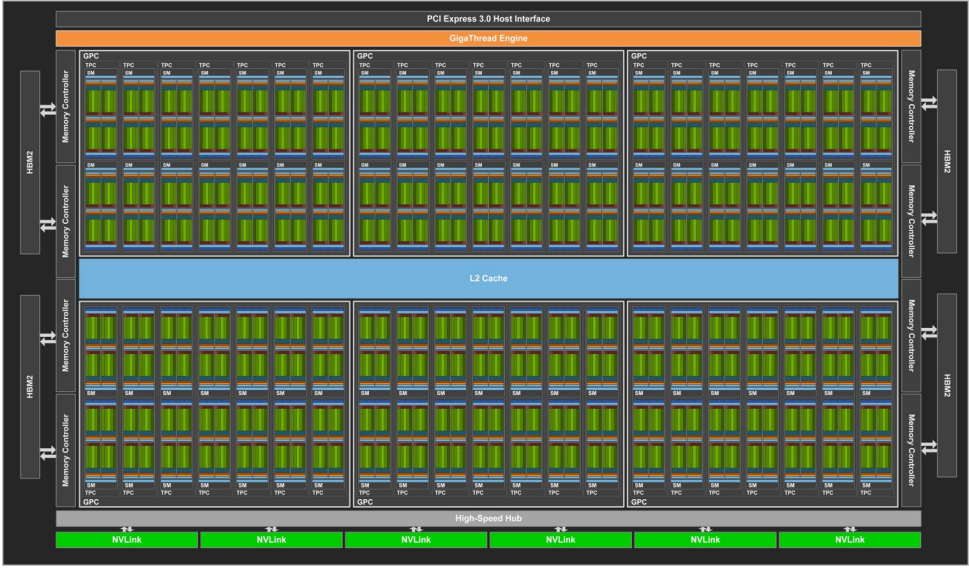

Background Tecnologico
In questo progetto abbiamo fatto uso di diverse tecnologie, a partire dal linguaggio Julia, utilizzato per implementare tutto quanto, passando poi per gli elementi principali della programmazione, come i task, il multithreading e infine implementando tutto in modo tale da sfruttare la potenza di calcolo di una GPU NVidia.
Julia
Julia è un linguaggio di programmazione dinamico di alto livello, ad alte prestazioni. Sebbene sia un linguaggio generico e possa essere utilizzato per scrivere qualsiasi applicazione, molte delle sue caratteristiche sono adatte per l'analisi numerica e la scienza computazionale. Aspetti distintivi del design di Julia includono un sistema di tipi con polimorfismo parametrico in un linguaggio di programmazione dinamico; con invio multiplo come paradigma di programmazione principale. Julia supporta l'elaborazione simultanea, parallela (componibile) e distribuita (con o senza l'utilizzo di MPI o il corrispondente integrato ai thread \"stile OpenMP\") e la chiamata diretta di C e librerie Fortran senza codice colla. Julia utilizza un compilatore just-in-time (JIT) denominato \"just-ahead-of-time\" (JAOT) nella community di Julia, poiché Julia compila tutto il codice (per impostazione predefinita) in codice macchina prima di eseguirlo. Julia è raccolta di rifiuti, utilizza la valutazione desiderosa e include librerie efficienti per calcoli a virgola mobile, algebra lineare, generazione di numeri casuali e corrispondenza di espressioni regolari. Sono disponibili molte librerie, incluse alcune (ad es. per trasformazioni di Fourier veloci) che erano state precedentemente fornite in bundle con Julia e ora sono separate. Diversi strumenti di sviluppo supportano la codifica in Julia, come ambienti di sviluppo integrati (ad es. Visual Studio Code di Microsoft, con estensioni disponibili che aggiungono il supporto di Julia agli IDE, ad es. fornendo supporto per debug e linting); con strumenti integrati, ad es. un profiler (e il supporto per i grafici di fiamma disponibili per quello integrato), un debugger e il pacchetto Rebugger.jl \"supporta il debug a esecuzione ripetuta\" e altro ancora.
Julia Artifacts
Gli artefatti[@artifacts] in Julia esistono sotto forma di un modulo all'interno del modulo Pkg chiamato Pkg.Artifacts. Si accede alla funzionalità nel REPL tramite:
julia> using Pkg.ArtifactsSe inserire immagini, file binari, set di dati e dati simili nei repository git fosse indolore e senza problemi, potremmo non aver bisogno di Artifacts.
Il problema è che per i file binari i requisiti di spazio possono diventare eccessivi abbastanza rapidamente. Compilare una versione per ogni piattaforma, 32-bit, 64-bit e una moltitudine di altre varianti e mantenerla nella libreria del codice sorgente è una pratica troppo onerosa: ci vorrebbe troppo spazio.
Con Artifacts, più pacchetti potrebbero in linea di principio utilizzare gli stessi dati e non è necessario scaricarli due volte. Facciamo conto che il pacchetto A e il pacchetto B, entrambi dipendono dalla libreria Qt. La soluzione fittizia a questo è che entrambe le librerie memorizzino una copia di Qt.
Bisognerebbe quindi scaricare un'enorme libreria due volte sprecando il doppio dello spazio sul disco rigido. Non è una buona soluzione. Ora qualcun altro potrebbe pensare di essere intelligente e archiviare Qt in una directory condivisa per entrambi i pacchetti da usare. Vari sistemi operativi lo hanno fatto all'inizio e hanno creato la cosa divertente che chiamiamo \"inferno DLL\". Ciò accade quando la versione Qt richiesta non è proprio la stessa. La versione scaricabile Qt potrebbe funzionare per A, ma non per B.
Git ha reso popolare una soluzione a questo enigma chiamato dati indirizzabili al contenuto. Ciò significa che non localizzano i dati fornendo percorsi come A/libs/Qt, ma usiamo invece degli hash.
In questo caso, ogni byte dei binari della libreria Qt viene inserito in un algoritmo di hashing e crea un numero univoco, l'hash. In teoria, ovviamente, non è possibile garantire che due set di dati producano hash diversi. La possibilità che diversi set di dati producano lo stesso hash è simile a quella di due persone in posizioni casuali sulla terra che raccolgono lo stesso granello di sabbia. Potrebbe succedere, ma è improbabile.
Il sistema di pacchetti Julia può quindi verificare se una libreria è stata già installata controllando se esiste già una directory con un hash ed evitare di scaricare la stessa libreria una seconda volta.
Un altro problema risolto con Artifacts è che si evita di gonfiare il proprio repository con file binari. Supponiamo che tu abbia un pacchetto Museo con il codice per mostrare i quadri. Invece di inserire una directory quadri nel repository del pacchetto con le immagini di ogni opera d'arte, crei un file Artifacts.toml. In esso descrivi dove si trovano le varie immagini in una maniera simile a questa:
# Museo/Artifacts.toml
[pictures]
git-tree-sha1 = "c5f4d31e5c9c5d6fba2469ceff3d9916050d92d2"
lazy = true
[[pictures.download]]
sha256 = "2aea399ab3c6b6e3a4285ec6ae31b858803442bf1b3e3e4889a2e3e8287d56c6"
url = "https://github.com/johndoe/Museo.jl/releases/download/pictures.tar.gz"Thread
Un thread è un singolo flusso sequenziale di controllo all'interno di un programma. [@threads]
La vera eccitazione che circonda i thread non riguarda un singolo thread sequenziale. Piuttosto, si tratta dell'uso di più thread in esecuzione contemporaneamente ed eseguire attività diverse in un unico programma. Questo uso è illustrato nella figura successiva.
Un browser Web è un esempio di applicazione multithread. All'interno di un browser tipico, puoi scorrere una pagina mentre sta scaricando un'applet o un'immagine, riprodurre animazioni e suoni contemporaneamente, stampare una pagina in background mentre scarichi una nuova pagina o guardare tre algoritmi di ordinamento che corrono verso il traguardo.
Alcuni testi chiamano un thread un processo leggero. Un thread è simile a un processo reale in quanto entrambi hanno un unico flusso sequenziale di controllo. Tuttavia, un thread è considerato leggero perché viene eseguito nel contesto di un programma completo e sfrutta le risorse allocate per quel programma e l'ambiente del programma.
Tasks
Una coroutine o task è simile a un thread: è una linea di esecuzione, con il proprio stack, le proprie variabili locali e il proprio puntatore alle istruzioni; il tutto però è condiviso con altre coroutine. La principale differenza tra thread e coroutine è che, concettualmente (o letteralmente, in una macchina multiprocessore), un programma con thread esegue diversi thread in parallelo. Le coroutine, d'altra parte, sono collaborative: in un dato momento, un programma con coroutine esegue solo una delle sue coroutine e questa coroutine in esecuzione sospende la sua esecuzione solo quando richiede esplicitamente di essere sospesa. [@tasks]
L'istruzione 'yield' in Julia ha lo scopo di creare coroutine. Quando si incontra l'istruzione 'yield', lo stato corrente della funzione viene salvato e il controllo viene restituito alla funzione chiamante. La funzione chiamante può quindi ritrasferire l'esecuzione alla funzione cedente e il suo stato verrà ripristinato al punto in cui è stato riscontrato lo 'yield' e l'esecuzione continuerà.
Architettura Tesla
Tesla è il nome in codice di una microarchitettura GPU sviluppata da Nvidia e rilasciata nel 2006, come successore della microarchitettura Curie. Prende il nome dal pioniere dell'ingegnere elettrico Nikola Tesla. Come prima microarchitettura di Nvidia a implementare gli shader unificati, è stata utilizzata con GeForce serie 8, GeForce serie 9, serie GeForce 100, serie GeForce 200 e serie GeForce 300 di GPU prodotte collettivamente in 90 nm, 80 nm, 65 nm, 55 nm, e 40 nm. Era anche nella GeForce 405 e nei moduli di elaborazione Quadro FX, Quadro x000, Quadro NVS e Nvidia Tesla. Tesla ha sostituito le vecchie microarchitetture a pipeline fissa, rappresentate al momento dell'introduzione dalla serie GeForce 7. Ha gareggiato direttamente con la prima microarchitettura shader unificata di AMD denominata TeraScale, uno sviluppo del lavoro di ATI su Xbox 360 che utilizzava un design simile. Tesla è stato seguito da Fermi.
